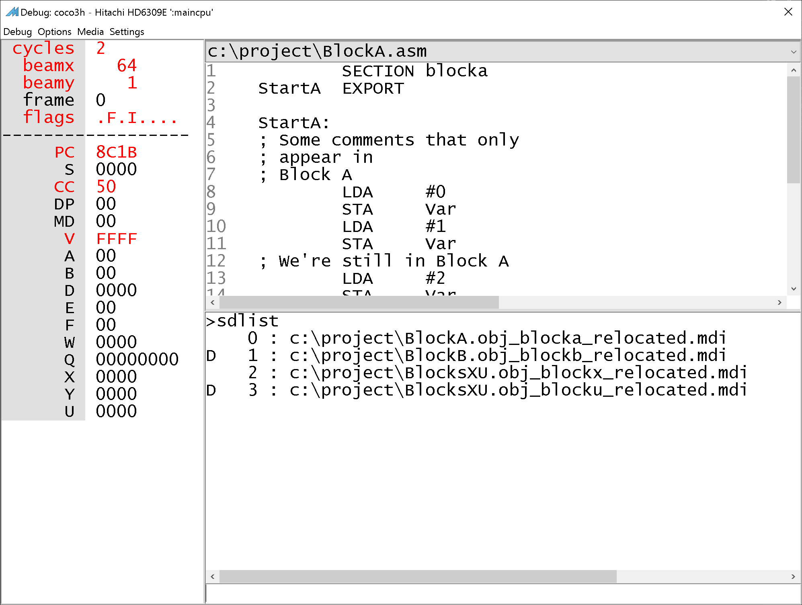

MAME source-debugging preview
More Features
NitrOS-9
There is some support for source-level debugging in an OS like NitrOS-9, which loads code into addresses that are known only at run-time, and not during assembling or linking.
You can use the sdoffset command to tell the debugger where the module loaded, and the argument you pass will be applied as an offset to all addresses in the MAME debugging information file.
Alternatively, you can automate the process of figuring out where the module gets loaded and executing sdoffset by using a LUA script. An example LUA script can be found here. The comments at the top explain how to use it.
MMU-Aware Debugging
With modern machines, typically the logical address space is far larger than the actual physical RAM installed on the machine. But with vintage machines, it can easily be the opposite. With an 8/16-bit CPU that is capable of addressing only a 64K logical address space, there may well be more than 64K of physical RAM installed on the machine. The CoCo 3 is a good example of just such a machine. There are features first introduced in mame-sd-0277-R2 and lwtools-sd-4.24-R2 which allow the user to issue debugger commands to help it know when code is being swapped in and out of a range of logical addresses. If you automate the issuing of these commands with a LUA script (see below), the end result is an intelligent debugging experience where the source and symbols automatically change as physical RAM gets swapped in and out of the logical address space. (Thanks to Glen Hewlett for reporting this scenario!)
Background - Multiple MDIs
Typically you provide a single MAME debugging information file (MDI) on the MAME command line as discussed in the Quick Start Guide, and you're good. Even in cases when you have multiple assembly files which you assemble to obj files, and then link together, you would still use the single MDI file generated by lwlink, and specify that on the MAME command line (see lwtools section in the Quick Start Guide).
However, there are scenarios where the same “logical” addresses (i.e., the addresses used by the CPU to refer to an area of memory) might have different blocks of physical RAM mapped to them at different times. And sometimes that physical RAM contains executable code. The MAME debugger needs to know which code is mapped in at a given time so it knows which source to show. The debugger does not do complex analysis of the code it's debugging, and does not understand the different hardware nuances of the emulated machines, so it needs your help to know which source level debugging information to consult at any given time.
This is done through the use of multiple MDI files. Rather than specifying a single MDI file path on the MAME command line, specify a semicolon-separated list of all the MDI files that comprise the program you are debugging. So long as blocks of code that may overlap in the logical address space appear in different MDI files, you can tell the debugger--during the course of program execution--which MDI files to enable or disable at any given time.
Step by Step
In addition to generating a single combined MDI file, lwlink now also generates individual MDI files for each section getting linked, much as lwasm does. But lwlink knows which logical addresses those sections get loaded to, so (unlike lwasm) lwlink can generate these files with the proper addresses built in. These MDI files contain 'relocated' in their names.
To take advantage of this, ensure that any code blocks that might overlap in the logical address space at runtime are separated into different sections (using the usual SECTION / ENDSECTION directives already built into lwtools), and ensure your link script specifies these sections with the proper logical load addresses.
Run lwasm as usual, and you will still see a series of intermediate MDI files for each asm file + section combination, to be used as inputs for lwlink (MDI files for code outside sections omitted for clarity.)
c:\project>dir
Directory of c:\project
06/10/2025 01:52 PM 406 BlockA.obj_blocka.mdi
06/10/2025 01:52 PM 394 BlockB.obj_blockb.mdi
06/10/2025 01:52 PM 397 BlocksXU.obj_blocku.mdi
06/10/2025 01:52 PM 409 BlocksXU.obj_blockx.mdi
06/10/2025 01:52 PM 260 mmu.obj_mmu00.mdi
06/10/2025 01:52 PM 260 mmu.obj_mmu01.mdi
06/10/2025 01:52 PM 260 mmu.obj_mmu02.mdi
06/10/2025 01:52 PM 260 mmu.obj_mmu03.mdi
12 File(s) 3,378 bytes
Run lwlink as usual, and you will now see the 'relocated' MDI files generated during the link step, as well as the combined "full" MDI file.
c:\project>dir
Directory of c:\project
06/10/2025 01:57 PM 406 BlockA.obj_blocka_relocated.mdi
06/10/2025 01:57 PM 394 BlockB.obj_blockb_relocated.mdi
06/10/2025 01:57 PM 1,096 BlocksFull.mdi
06/10/2025 01:57 PM 397 BlocksXU.obj_blocku_relocated.mdi
06/10/2025 01:57 PM 409 BlocksXU.obj_blockx_relocated.mdi
06/10/2025 01:57 PM 260 mmu.obj_mmu00_relocated.mdi
06/10/2025 01:57 PM 260 mmu.obj_mmu01_relocated.mdi
06/10/2025 01:57 PM 260 mmu.obj_mmu02_relocated.mdi
06/10/2025 01:57 PM 260 mmu.obj_mmu03_relocated.mdi
9 File(s) 3,742 bytes
As mentioned above, it's fine to ignore the relocated MDI files and just specify the final combined MDI file to MAME if you do not need MAME to adjust source as code gets swapped in and out of logical address ranges. However, if you do want to take advantange of "MMU-aware" debugging, specify these relocated MDI files on the MAME command-line instead of the single combined MDI file. For example (unrelated command-line parameters and MDI files not containing code omitted for brevity):
mame coco3 ... -debug -src_debug_info MmuSample/BlockA.obj_blocka_relocated.mdi; MmuSample/BlockB.obj_blockb_relocated.mdi;MmuSample/BlocksXU.obj_blockx_relocated.mdi; MmuSample/BlocksXU.obj_blocku_relocated.mdi
From the debugger console window, use the sdlist, sdenable, and sddisable commands, which work much like the corresponding breakpoint commands.
sdlist lists all of the MDI files specified on the command line, with their index, and a ‘D’ next to each one that is currently disabled.

While debugging, as your program writes to the MMU to swap code in and out, use the sdenable and sddisable commands to individually enable and disable an MDI file by its index, so the debugger knows which blocks of code are currently active.
>sdenable 1
Source-debugging info 1 is now enabled
>sddisable 2
Source-debugging info 2 is now disabled
>sdlist
0 : c:\project\BlockA.obj_blocka_relocated.mdi
1 : c:\project\BlockB.obj_blockb_relocated.mdi
D 2 : c:\project\BlocksXU.obj_blockx_relocated.mdi
D 3 : c:\project\BlocksXU.obj_blocku_relocated.mdi
You can automate this process using a LUA script. See the sample for more information.
Other Pages
Quick Start Guide (installation and usage introduction)
More Features (you are here)
Limitations (baby steps)
Full source-level debugging docs for MAME (Full MAME docs built with additional topics on source-level debugging)
Build Instructions (optional, only if you want to build the preview yourself)
Discussions (Questions, bugs, etc.)